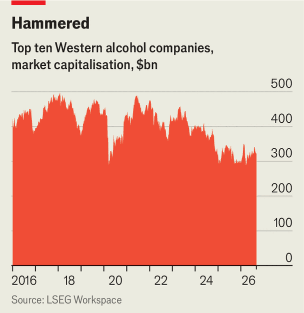

As booze sales fall, competition among drinks-makers intensifies
The line between brewers, vintners and distillers is blurring

Sep 10th 2026
Once upon a time brewers, vintners and distillers had little to fear from one another. Each beverage had its occasion to shine: people imbibed beer as they watched a game, sipped wine over dinner and downed spirits as they partied late into the night. Some consumers defied convention, but drinks-makers themselves stuck to their terroir. No more. With the booze industry facing an uncertain future, old boundaries are being crossed.

Over the past five years the combined market value of the West’s ten largest listed alcoholic-drinks companies has fallen from $500bn to $320bn (see chart). Investors have grown nervous that abstemious youngsters may never drink as much as their forebears. Global alcohol consumption fell by 2% in 2025, the third straight year of decline, according to IWSR, a research firm.
One of drinks-makers’ responses has been to roll out countless non-alcoholic beers (quite good), gins (passable) and wines (don’t bother). Another has been to gatecrash occasions that their tipple has not traditionally been selected for. Beer, for instance, has long been the dominant beverage for outdoor events such as sports matches. As was to be expected, this year’s football World Cup brought a boost in volumes for big brewers such as AB InBev and Heineken. But others are eager for a slice of that business. Diageo, which owns Guinness but makes the vast majority of its money from spirits such as Johnnie Walker and Casamigos, sponsored this year’s tournament across North America. Jameson, owned by Pernod Ricard, is the official whiskey of Major League Soccer, the top league in the United States and Canada.
Spirits-makers’ offensive goes well beyond sponsorship. Campari, the Italian company behind Aperol, has been experimenting with putting drinks based around its aperitifs on tap. At a recent Bad Bunny concert in Milan 22,000 glasses of Aperol Spritz were sold to fans. Campari says its cocktails-on-tap have already claimed 1.5% of Italy’s premium-beer market, and the firm is now launching the concept elsewhere, including Germany and Britain.
At the same time, brewers and vintners are expanding into canned cocktails—once the domain of distillers. So-called “ready-to-drinks” (RTDs), including everything from pre-mixed gin-and-tonics to piña coladas, have soared in popularity. Global sales rose by 3% last year, reckons IWSR, with premium versions up by more than 15%. A big part of their appeal comes from their convenience. “Say you’re hosting ten people but you don’t want to be there in the kitchen catering for each and every person,” explains Michel Doukeris, boss of AB InBev. “It’s easier to open a can of margarita or a Tetra Pak that has wine punch inside.”
Mr Doukeris’s company has expanded enthusiastically into RTDs over the past few years. AB InBev has invested heavily to grow Cutwater Spirits, a maker of canned cocktails it acquired in 2019. Earlier this year the brewer also bought a majority stake in BeatBox Beverages, a seller of wine-based concoctions in cartons. Others have followed suit. In March Molson Coors, another beer giant, acquired the maker of Monaco Cocktails, which sells its mixtures in fluorescent cans. Vintners are in the business, too. Gallo, an unlisted Californian firm that is the world’s biggest wine-maker by volume, is also one of the top sellers of RTDs in America, thanks to its High Noon brand.
Spirits-makers, having established the RTD category, are falling behind. Partly that reflects a reluctance to cannibalise their core business. The products they have launched have tended to be designed around their existing brands, which has failed to give young consumers the novelty they crave. As BCG, a consultancy, points out, purpose-built brands dominate the market for RTDs in America. Beer companies also tend to have far more extensive distribution networks, giving them an added advantage. Pessimism over the outlook for the spirits industry may explain why earlier this year both Pernod Ricard and Sazerac, another distiller, tried (unsuccessfully) to combine with Brown-Forman, maker of Jack Daniel’s.
If all else fails, there is at least one other category booze businesses could pursue. Soft drinks laced with cannabinoids are all the rage among youngsters. They might just give drinks-makers their buzz back. ■